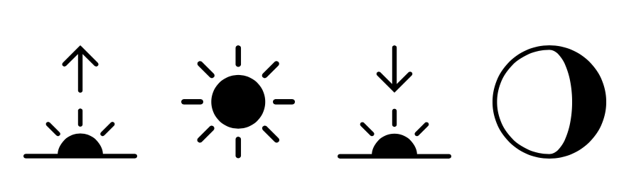
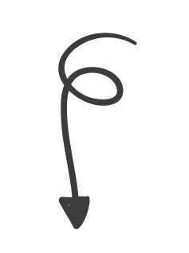

SOBRE GUSTOS
Conociendo a los encuestados...
A partir los datos de 150 personas encuestadas,
quise comparar mis gustos de café con los de ellos. ¿Cuántos lo toman como yo?
La visualización de la derecha muestra información sobre los encuestados, y yo me represento con una carita.
Mis gustos:
- 4 tazas por día
- Con leche
- Sin endulzar
58%
TOMA EL CAFÉ CON LECHE SIEMPRE O A VECES
16,7%
DE QUIENES LO TOMAN CON LECHE SIEMPRE O A VECES NO LO ENDULZAN
12,7%
TOMAN 4 TAZAS POR DIA
6,7%
DE MI RANGO DE EDAD TOMA 4 o 5 TAZAS
MOMENTOS EN QUE TOMAMOS CAFÉ
Mi combinación
IMPACTO EN LA ENERGÍA Y EL SUEÑO
El café no afecta ni en mi nivel de energía ni en mis horas sueño.
Por otro lado, la mayor parte de los encuestados siente que el café afecta siempre o a veces en su nivel de energía y
no siente que impacte en su sueño.